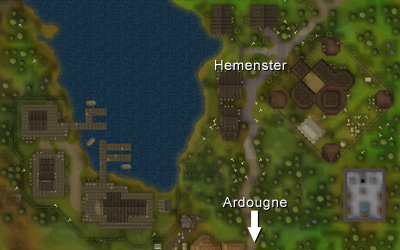
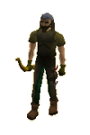

")
Hemenster (Members)
Introduction | Location | Points of Interest | Personalities
Quests | Peaceful Hemenster | Miscellaneous
Quests | Peaceful Hemenster | Miscellaneous
Introduction

Location

To the north is McGrubor's Wood, a large swathe of private land filled with trees.
West of the town is the Tree Gnome Stronghold.
Points of Interest

Hemenster also plays host to the most important Fishing Contest in RuneScape, so you can usually find the finest fishermen in the land congregating there to test their skills.
Personalities
|
For years no one could best Grandpa Jack in any Fishing competition anywhere in the world. He'd cast his line out, wait a few seconds, and haul in the biggest fish people had seen in decades. He could have gone on like that for many more years, but Grandpa Jack wasn't in it for the glory. No, Jack liked to see people fishing, so he passes his secrets on to anyone that cares to listen.
|

Though contestants come from around the world, few have so obviously come from as far afield as Vlad. He's very careful with information about himself, though, so don't expect him to admit to his nighttime hobbies.
|
|
| Grandpa Jack can be found reminiscing in his house north-east of the Contest area. | Vlad can be found by the shore, waiting for the contest to begin. |

With a name so completely absent of irony, Big Dave could hardly be expected to give his secrets away. He is the reigning champion of the Fishing Contest, and wants to keep it that way. As a result of this attitude, he's not likely to make many friends, but he might get another trophy for his shelf.
|
| Big Dave can be found by the shore, sizing up the competition. |
Quests
There are no quests to start in Hemenster.
Peaceful Hemenster
|

Though Hemenster is so peaceful a town, devoid of monsters and other creatures, the Ranging Guild is filled with guards. These are competent archers equipped with longbows, and commanded to eliminate any threats to the Guild. As the Guild is a multicombat area, adventurers could well find themselves in combat with a number of guards simultaneously.
|
| Guards can be found in the Ranging Guild. |
Miscellaneous
- Though most of them are broken, there is a large number of arrow spawn points in the Ranging Guild. Even broken arrows can be fixed, though, provided you have a workshop in your house.
- As you enter the Fishing Guild, you will find that a number of Fishing items respawn in the first room.
- Grandpa Jack obviously has another hobby besides Fishing, as you can find a glassblowing pipe on a table in his house.
- The tribal weapons seller in the Ranging Guild sells a variety of throwing weapons, including rune throwing axes.
- Fishermen representatives from the Fishing Guild regularly appear both inside and just outside of the guild. Talk to them if you'd like to know more about the guild's Fish Flingers competition, and possibly enter one.

More articles in
Cities and Towns
|
|